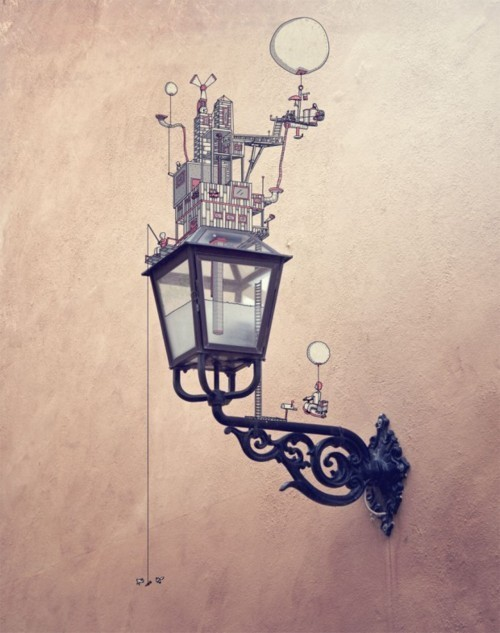
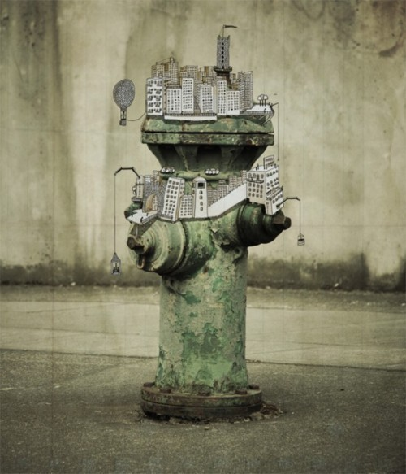

Fri, 19 Nov 2010 14:06:00 · AugR · illustration · photography · AugmentedReality
Augmented Photos + Illustrations


Here’s some awesome collection of 22 Photographs augmented with illustrations by Johan Thörnqvist - see more here.